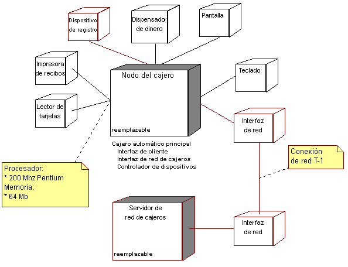

|
Analizar los requisitos de distribución
|
Objetivo
|
Definir hasta que punto es necesaria la distribución para el sistema.
|
Los requisitos de distribución están determinados por:
-
Las demandas de distribución del dominio de problemas (requisitos funcionales): pueden ser requisitos
explícitos a los que accede el sistema o utilizar un procesador distribuido específico, una base de datos o un
sistema de legado para ejecutar parte de la funcionalidad.
-
La configuración de despliegue seleccionada: hay configuraciones de despliegue específicas que imponen
restricciones en la distribución del sistema mediante la definición de los números y los tipos de nodos, y sus
interconexiones. Por ejemplo, la selección de una configuración de despliegue de varios niveles significa
normalmente que tiene un nodo de cliente, un nodo de servidor web y un nodo de servidor de aplicaciones. Durante la
Tarea: Análisis de la arquitectura se seleccionará una
configuración de despliegue específica y se perfeccionará durante esta tarea.
-
Los recursos necesarios (requisitos no funcionales): la funcionalidad que necesita una gran cantidad de
tiempo o de cálculos puede requerir configuraciones de hardware específicamente equipadas para manejar las demandas
de la funcionalidad; por ejemplo, un procesador más rápido, mucha RAM o una gran cantidad de espacio de
disco. Un ejemplo de esto es el proceso de señales digitales, que puede requerir procesadores especializados y
dedicados.
-
La necesidad de tolerancia a errores (requisitos no funcionales): el requisito puede ser tener
procesadores de copia de seguridad.
-
Los requisitos de escalabilidad y flexibilidad (requisitos no funcionales): un número muy grande de
usuarios concurrentes es demasiado para un único procesador. Debe existir un requisito que equilibre la carga de la
funcionalidad del sistema, a la vez que proporcione el máximo rendimiento y la máxima escalabilidad.
-
Los requisitos económicos: la rentabilidad de los procesadores más pequeños y más baratos no se puede
igualar en modelos más grandes.
Al igual que ocurre con muchos problemas de arquitectura, estos requisitos pueden ser a veces mutuamente exclusivos. No
es extraño tener, al menos inicialmente, requisitos en conflicto. Establecer un rango de requisitos en términos de
importancia ayudará a resolver el conflicto.
|
Definir la configuración de la red
|
Objetivo
|
Definir la configuración y la topología de la red.
|
En este paso, el Modelo de despliegue inicial (definido en Tarea: Análisis de la arquitectura) se perfecciona para dar soporte a
los requisitos de distribución identificados en el paso anterior.
La topología de la red, y las posibilidades y las características de los procesadores y los dispositivos en la red,
determinarán la naturaleza y el grado de distribución posible en el sistema.
Es necesario capturar la siguiente información:
-
el diseño físico de la red, incluidas las ubicaciones
-
los nodos en la red, y sus configuraciones y posibilidades (la configuración incluye el hardware y el software
instalado en los nodos, el número de procesadores, la cantidad de espacio de disco, la cantidad de memoria, la
cantidad de intercambio, etc.); el hardware instalado en el nodo se puede representar utilizando dispositivos.
-
el ancho de banda de cada segmento en la red
-
la existencia de las vías redundantes en la red (esto ayudará a proporcionar posibilidades de tolerancia a errores)
-
el objetivo principal del nodo, que incluye:
-
-
los nodos de estación de trabajo utilizados por los usuarios
-
los nodos de servidor sobre qué procesos sin cabecera se producen (para simplificar la configuración del
servidor, los componentes se pueden empaquetar en una imagen sin cabecera, que no contiene componentes de
la interfaz de usuario)
-
las configuraciones especiales utilizadas en el desarrollo y las pruebas
-
otros procesadores especializados
-
el diseño de IP y los recursos (por ejemplo, DNS, VPN), si existe una red de IP
-
el papel que juega Internet en la solución
Ejemplo
En el siguiente diagrama se muestra la vista de despliegue de un cajero automático

Vista de despliegue de un cajero automático
El diagrama muestra dos nodos (el propio cajero, que es el centro de este ejemplo) y el servidor de la red de cajeros,
a través del cual se realizan todas las conexiones en la red entre bancos. Aunque el servidor de la red de cajeros está
fuera del ámbito de los constructores del cajero automático, se incluye aquí para ilustrar cómo se puede documentar el
ancho de banda de la red. El diagrama también muestra los procesos y las hebras que se ejecutarán en el nodo del cajero
automático, que se describen en el siguiente paso Asignar
elementos del sistema a los nodos.
Observe el uso de anotaciones para documentar la capacidad del procesador y de la red. Este tipo de documentación
también se puede presentar en los campos de documentación del nodo (o los dispositivos), en cuyo caso no aparece en el
diagrama.
|
Asignar elementos del sistema a los nodos
|
Objetivo
|
Distribuir la carga de trabajo del sistema.
|
En este paso, los elementos del sistema se asignan a los nodos definidos en el paso anterior. El despliegue se puede describir desde una
perspectiva lógica y física.
El despliegue lógico es aquel en el que se correlacionan elementos lógicos (clases, subsistemas o instancias de
éstos) con nodos. Estos pueden incluir hebras de control. Por ejemplo, un despliegue lógico puede indicar
que el subsistema AuctionManager está desplegado en el servidor de aplicaciones.
El despliegue físico es aquel en el que los archivos se correlacionan con nodos. Por ejemplo, un despliegue
físico puede indicar que el archivo CloseAuctionTimer.class está desplegado en server76.
La distribución es un área en la que el conjunto puede ser (y a menudo es) menor que la suma de las partes. La
obtención de ventajas reales en la distribución requiere trabajo y una atenta planificación. Cuando decida qué
elementos se correlacionarán con los nodos, tenga en cuenta lo siguiente:
-
la capacidad del nodo (en términos de memoria y potencia de proceso)
-
el ancho de banda medio de la comunicación (bus, LAN, WAN)
-
la disponibilidad del hardware y los enlaces de comunicación, el redireccionamiento
-
los requisitos de redundancia y tolerancia a errores
-
los requisitos de tiempo de respuesta
-
los requisitos de productividad
Los elementos se asignan a los nodos con el objetivo de minimizar la cantidad de tráfico cruzado en la red; los
elementos que tienen un alto grado de interacción se deben colocar en el mismo nodo; por otro lado, los elementos que
interactúan con menos frecuencia pueden residir en nodos diferentes. La decisión más difícil, que a veces requiere
iteración, es dónde marcar la línea de separación. La distribución de procesos entre dos o más nodos requiere un examen
más a fondo de los patrones de la comunicación entre procesos del sistema. A menudo, existe la percepción ingenua de
que la distribución del proceso puede descargar trabajo de una máquina a otra. En la práctica, la carga de trabajo
adicional de la comunicación entre procesos puede anular fácilmente las ventajas obtenidas con la distribución de la
carga del trabajo si no se presta atención a los límites de proceso y nodo.
Ejemplo
En el diagrama de ejemplo anterior, la Vista de despliegue del cajero automático ilustra la asignación de
procesos en el nodo para el nodo del cajero. Existe un único proceso (Cajero automático principal), que a su vez está
formado por tres hebras de control independientes (Interfaz del cliente, Interfaz de la red de cajeros y Controlador de
dispositivos).
Algunos entornos proporcionan mecanismos para automatizar y/o simplificar la distribución. Por ejemplo:
-
Clústeres: un clúster es un grupo de servidores que actúa como una unidad e incluye normalmente funciones
como, por ejemplo, la migración tras error y el equilibrio de carga. En este caso, la vista de despliegue debe
describir cómo se asignan los elementos del sistema a los clústeres y cómo se configuran los clústeres para
correlacionarse con nodos físicos.
-
Contenedores: en entornos de componentes como, por ejemplo, J2EE, Microsoft .NET y otros, los componentes se
ejecutan dentro de un entorno informático lógico denominado contenedor. Un contenedor se puede considerar un "nodo
lógico". La vista de despliegue debe describir cómo se despliegan los elementos del sistema en los contenedores y a
su vez cómo se asignan los contenedores a los nodos físicos.
El uso de este tipo de mecanismos de distribución y cómo se deben configurar y correlacionar con nodos físicos para
cumplir los requisitos de distribución se debe documentar como parte de la vista de despliegue.
|
|